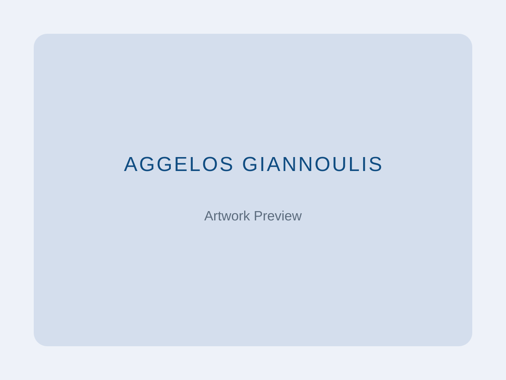

Curriculum Vitae Lebenslauf
Download a concise PDF CV or browse the highlights below.
Laden Sie eine kompakte PDF-Version herunter oder sehen Sie sich die wichtigsten Stationen unten an.
Replace the PDF with your latest export in assets/docs/.
Bitte die PDF-Datei in assets/docs/ durch die aktuelle Version ersetzen.

Education Ausbildung
- 2019 – 2023 Bachelor of Fine Arts, School of Fine Arts, Aristotle University of Thessaloniki (AUTH), GR Bachelor of Fine Arts, School of Fine Arts, Aristoteles-Universität Thessaloniki (AUTH), GR
- 2022 Erasmus+ exchange semester, Universität der Künste Berlin (UdK), DE – studio practice in painting & illustration Erasmus+-Austauschsemester, Universität der Künste Berlin (UdK), DE – Atelierpraxis Malerei & Illustration
Selected Exhibitions Ausgewählte Ausstellungen
- 2024 Berlin Diaries – Group exhibition, Studio 45, Berlin, DE Berlin Diaries – Gruppenausstellung, Studio 45, Berlin, DE
- 2023 AUTH Graduate Show 2023 – Department of Fine Arts, Thessaloniki, GR AUTH Graduate Show 2023 – Fachbereich Bildende Kunst, Thessaloniki, GR
- 2022 In-Between/Transit – Student showcase, UdK Berlin, DE In-Between/Transit – Studierendenpräsentation, UdK Berlin, DE
Experience Erfahrung
- 2024 – present Freelance illustrator & visual artist, Berlin – commissions for editorial clients and cultural organisations Freiberuflicher Illustrator & Künstler, Berlin – Aufträge für Editorial-Kunden und Kulturinstitutionen
- 2023 Gallery assistant (intern), Contemporary Art Center of Thessaloniki – installation support, visitor engagement, documentation Galerieassistent (Praktikum), Contemporary Art Center of Thessaloniki – Aufbau, Besucherbetreuung, Dokumentation
- 2021 – 2022 Teaching assistant, Drawing & Colour studio, AUTH – supported first-year workshops and critiques Tutor im Zeichen- & Farbstudio, AUTH – Betreuung von Erstsemester-Workshops und Kritiken
Skills & Tools Fähigkeiten & Tools
- Painting (oil, acrylic, gouache); mixed media collage; life drawing; mural execution Malerei (Öl, Acryl, Gouache); Mixed-Media-Collage; Aktzeichnen; Wandbild-Ausführung
- Digital illustration (Procreate, Adobe Photoshop & Fresco); vector graphics (Illustrator) Digitale Illustration (Procreate, Adobe Photoshop & Fresco); Vektorgrafik (Illustrator)
- Photography & documentation for artworks; basic video editing (Premiere Pro) Fotografie & Dokumentation von Kunstwerken; grundlegender Videoschnitt (Premiere Pro)
Languages Sprachen
- Greek – native Griechisch – Muttersprache
- English – fluent Englisch – fließend
- German – basic conversational (A2 progressing) Deutsch – Grundkenntnisse (A2 in Fortschritt)